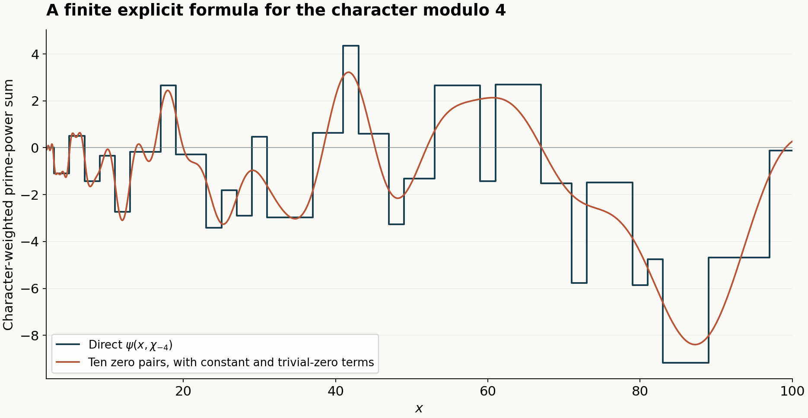
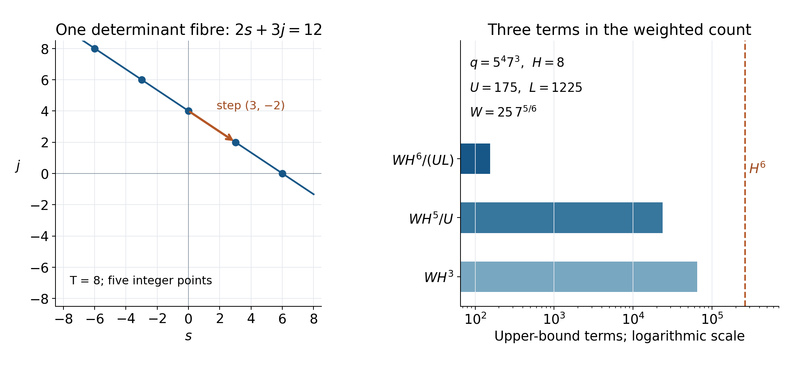
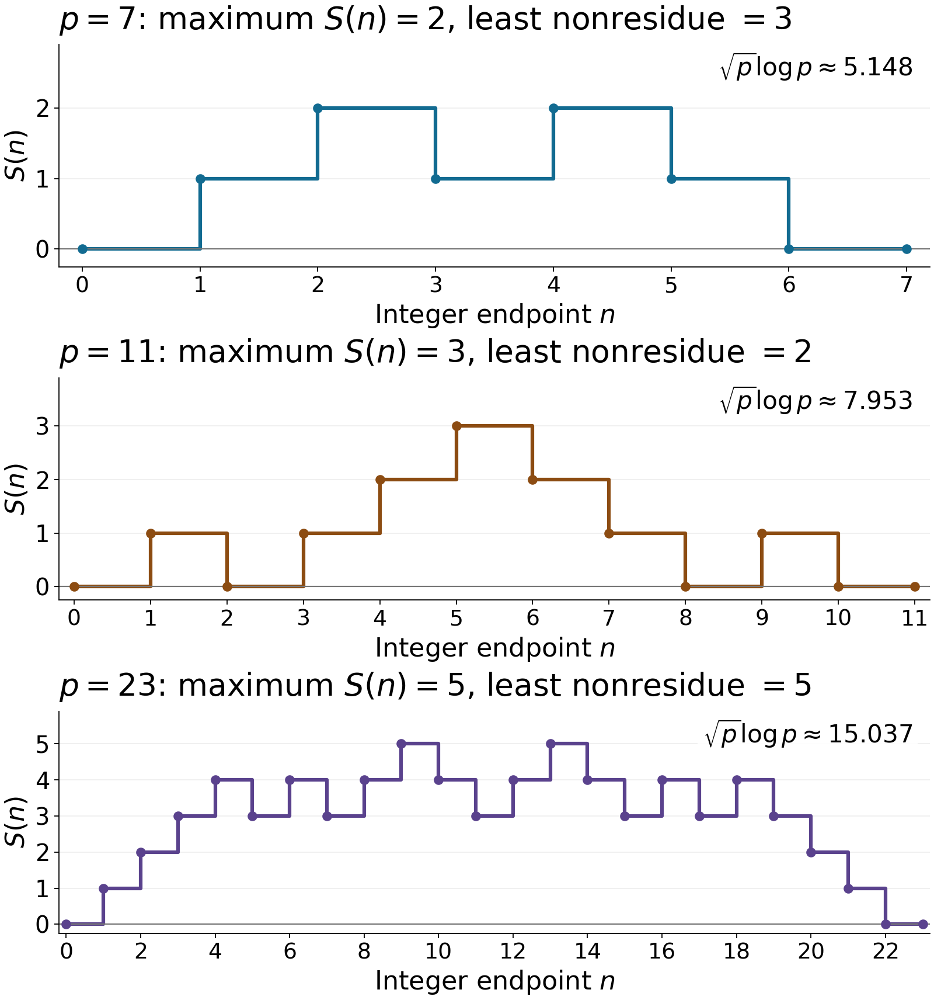
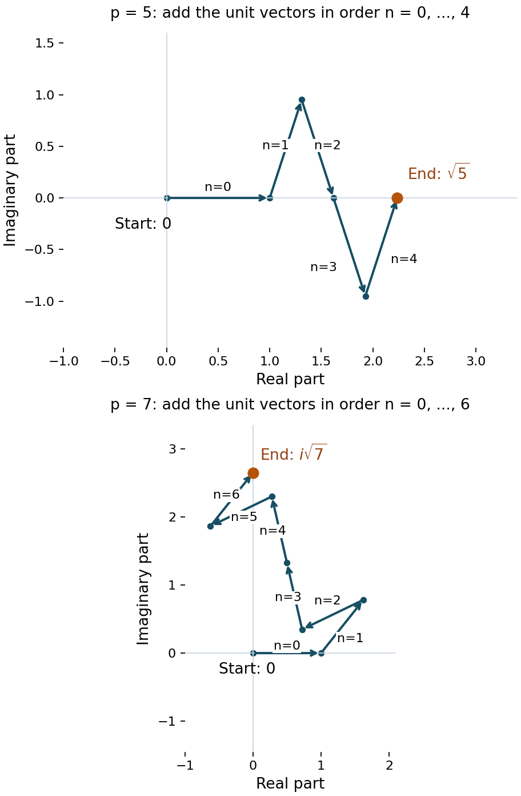
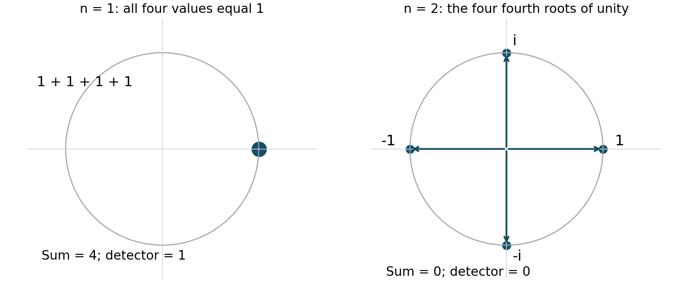
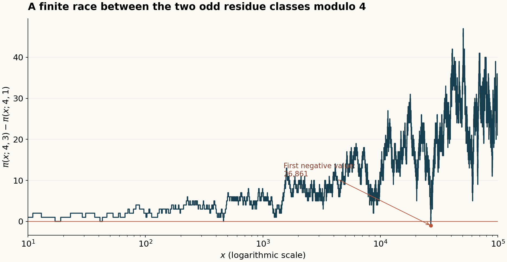

Dirichlet L-functions: figures and editable sources
Original programme diagrams, with their editable SVGs and reproducible Python sources. Finite computations and numerical samples are distinguished from the arguments in the lessons.
Beta explicit formula

Lesson · PNG · Editable SVG · Python source


Character determinant fibre

Lesson · PNG · Editable SVG · Python source · Exact example data


Character partial sums

Lesson · PNG · Editable SVG · Python source


Gauss sum paths

Lesson · PNG · Editable SVG · Python source


Orthogonality

Lesson · PNG · Editable SVG · Python source


Prime race modulo 4

Lesson · PNG · Editable SVG · Python source


The mathematical diagrams are CC0 1.0. DejaVu font terms remain applicable to glyphs. Machine-readable figure catalogue.